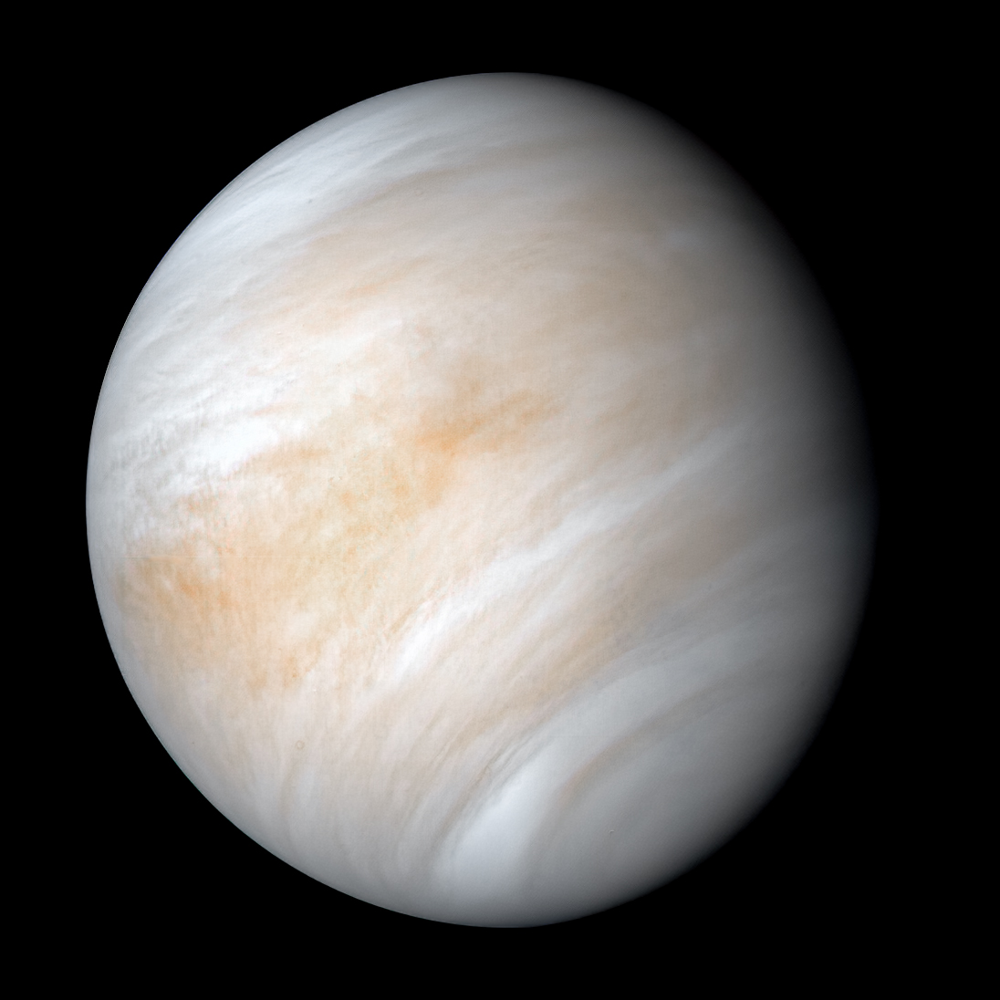

|
 |  |
 |
|
| Planet Names: | Mercury | Venus | Earth | Mars |
| Mass (kg): | 3.3 x 1023 | 4.87 x 1024 | 5.98 x 1024 | 6.42 x 1023 |
| Diameter (km): | 4879.4 | 12104 | 12756 | 6787 |
| Mean Density (kg/m3): | 5420 | 5250 | 5520 | 3940 |
| Escape Velocity (m/s): | 4300 | 10400 | 11200 | 5000 |
| Average Distance From Sun: | 0.387 AU (57,909,175 km) | 0.723 AU (108,208,930 km) | 1 AU (149,597,890 km) | 1.524 AU (227,936,640 km) |
| Rotation Period (length of day in Earth days): | 58.65 | 243.02 (retrograde) | 1 (23.93 hours) | 1.026 |
| Revolution Period (length of year in Earth days): | 87.97 | 224.7 | 365.26 | 686.98 |